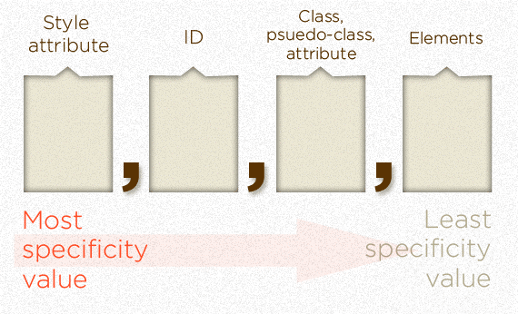

Modern CSS
How to write scalable, modular CSS
Me.json
{
"name": "Riccardo",
"surname": "Zanutta",
"interests": [
"Web", "Technology", "Sports"
],
"work": [
"@frontend-developer", "@ideonetwork"
],
"tech": [
"HTML", "CSS", "JavaScript", "React.js"
]
}History
Cascading Style Sheets (CSS) is a style sheet language used for describing the presentation of a document written in a markup language.
CSS level 1 was released in 1996, and republished with corrections in 1999.
CSS is hard.
CSS is code as much as JavaScript, PHP or anything else, and we should pay attention to the way we write it.
Otherwise, it may cause things to be more complicated than they should be.
Problems:
- The specificity thing
- Redundancy
- maintenance

Principles:
- be DRY
- be Mantainable: write for updates & debugging
- be Predictable: Don't keep hacking what's broken (unless you have to)
- Write Scalable code
- Write Modular code
CSS Preprocessors
A scripting language that extends the language and gets compiled into regular CSS.
Most used
- SASS
- LESS
- Stylus
SASS
- Variables
- Nesting
- Referencing parents Selectors: &
- Mixins
- Partials
- Extend / Inheritance
- Operators
- Conditionals, loops
Syntax
.sass
.foo
color: black
// indentation.scss
.foo {
color: black;
}Compiled to:
.foo {
color: black;
}Compile Sass:
- The original Ruby Sass binary. Install it with gem install sass, and compile it by running sassc myfile.scss myfile.css.
- A GUI app such as Prepros, Koala, CodeKit
- libsass, a blazing fast Sass compiler written in C. You can also install libsass via NPM with node-sass (npm install node-sass).
Variables
$font-stack: Helvetica, sans-serif;
$primary-color: #333;
body {
font: 100% $font-stack;
color: $primary-color;
}Compiled to:
body {
font: 100% Helvetica, sans-serif;
color: #333;
}Nesting
!important! Overly nested rules will result in over-qualified CSS that could prove hard to maintain and is generally considered bad practice.
.foo {
.bar {
margin: 0;
padding: 0;
list-style: none;
}
.baz {
display: block;
padding: 6px 12px;
text-decoration: none;
}
}Compiled to:
.foo .bar {
margin: 0;
padding: 0;
list-style: none;
}
.foo .baz {
display: block;
padding: 6px 12px;
text-decoration: none;
}Referencing Parent Selectors: &
.foo {
font-weight: bold;
&:hover {
text-decoration: underline;
}
.in-home & {
font-weight: normal;
}
}Compiled to:
.foo {
font-weight: bold;
}
.foo:hover {
text-decoration: underline;
}
.in-home .foo {
font-weight: normal;
}Modularize: Partials
/* partial.scss */
.foo {
width: 100%;
}/* app.scss */
@import "partial";
.bar {
background: white;
}Compiled to:
.foo {
width: 100%;
}
.bar {
background: white;
}Mixins
@mixin square($size, $color) {
width: $size;
height: $size;
background-color: $color;
}
.small-blue-square {
@include square(20px, blue);
}
.big-red-square {
@include square(300px, red);
}Compiled to:
.small-blue-square {
width: 20px;
height: 20px;
background-color: blue;
}
.big-red-square {
width: 300px;
height: 300px;
background-color: red;
}Extend/Inheritance
.message {
border: 1px solid #ccc;
padding: 10px;
color: #333;
}
.success {
@extend .message;
border-color: green;
}
.error {
@extend .message;
border-color: red;
}
.warning {
@extend .message;
border-color: yellow;
}Compiled to:
.message, .success, .error, .warning {
border: 1px solid #cccccc;
padding: 10px;
color: #333;
}
.success {
border-color: green;
}
.error {
border-color: red;
}
.warning {
border-color: yellow;
}Conditionals, loops
.foo {
@if 1 + 1 == 2 {
border: 1px solid;
}
@if 5 < 3 {
border: 2px dotted;
}
@if null {
border: 3px double;
}
}@for $i from 1 through 3 {
.item- {
width: 2em * $i;
}
}Compiled to:
p {
border: 1px solid;
}.item-1 {
width: 2em;
}
.item-2 {
width: 4em;
}
.item-3 {
width: 6em;
}LESS
- LESS is written in javascript, so you will need NodeJS to run it.
- Variables:
@nice-blue: #5B83AD; - Extend with
:extend(); - Mixins:
.a, #b { color: red; } .mixin-class { .a(); }
Stylus
Stylus is a CSS preprocessor written in Node.js.
- Variables:
text-font-stack = 'Helvetica', 'Arial', sans-serif; - Mixins:
size(width, height = width) width width height height .foo size(100px)
Summary
- SASS has better community support
- Many Features vs. LESS
- .scss syntax is the same as regular CSS, but with superpowers
(Dont' Repeat yourself)
"every piece of knowledge must have a single, unambiguous, authorative representation within a system."
A lot of repetition
.u-margin-top {
margin-top: 12px;
}
.u-margin-right {
margin-right: 12px;
}
.u-margin-bottom {
margin-bottom: 12px;
}
.u-margin-left {
margin-left: 12px;
}Variables: why not?
$unit: 12px;
.u-margin-top { margin-top: $unit; }
.u-margin-right { margin-right: $unit; }
.u-margin-bottom { margin-bottom: $unit; }
.u-margin-left { margin-left: $unit; }Single Source of Truth
"[...] the practice of structuring information models and associated schemata that every data element is stored exactly only once".
!confuse
Automation of repetition is fine.
If you can generate the same declaration 50 times without manually repeat it is DRY: you are generating repetition without actually repeating yourself.
Don't DRY if it's repeated coincidentally.
Repetition in compiled code is fine, just avoid duplication data in source.
Scalable + Modular = SMACSS

Scalable and Modular Architecture for CSS
It is more a style guide than rigid framework: is an attempt to document a consistent approach to site development when using CSS.
Five categories:
- Base is used for defaults like html, body, a, a:hover. This includes your CSS resets and would often be in its own base CSS file or at the start of your main CSS.
- Layout divides a page into sections with elements like header, footer, and article. Often developers show layout elements by prefixing the class with l-.
- Module is a reusable, modular element in the design. The SMACSS documentation sees modules as the majority of your elements and thus doesn’t require that you prefix them but you could do so if you choose.
- State is used for the variations possible for each element (e.g. active, inactive, expanded, hidden). These are prefixed with is-, e.g. is-active, is-inactive, is-expanded, is-hidden or are via pseudo-classes such as :hover and :focus or media queries.
- Theme is similar to state but defines how modules and layouts will look. It is more applicable for larger sites with shared elements that look different throughout. You would add theme variations on a per page or per section basis.
Do What you want!
SMACSS just provides basic guidelines. Use your own naming conventions for each of the categories and arrange them in your preferred way, as long as you document your approach so that other developers can follow along.
Why SMACSS?
- Good for newcomers to a CSS methodology
- Ease of reading
- Scalable for all projects
The specificity problem, naming conventions and writing methodologies.
- Whiskey and Ginger Ale
- Beer
- Vodka
.favorite {
color: red;
font-weight: bold;
}Doesn't work.

Try not to cry. Cry a lot.
Later you'll find:
ul#summer-drinks li {
font-weight: normal;
font-size: 12px;
color: black;
}The order of selectors in your CSS does play a role and the "further down" one does win when the specificity values are exactly the same.
.favorite {
color: red;
}
.favorite {
color: black;
}The color will be black.
Possible solutions:
ul#summer-drinks li.favorite {
color: red;
font-weight: bold;
}html body div#pagewrap ul#summer-drinks li.favorite {
color: red;
font-weight: bold;
}The Jedi mind trick for CSS.
.favorite {
color: red !important;
font-weight: bold !important;
}Please. Don't do that.
CSS applies vastly different specificity weights to classes and IDs. In fact, an ID has infinitely more specificity value!
- The universal selector (*) has no specificity value (0,0,0,0)
- Pseudo-elements (e.g. :first-line) get 0,0,0,1 unlike their psuedo-class brethren which get 0,0,1,0
- The !important value appended a CSS property value is an automatic win. It overrides even inline styles from the markup.
Naming conventions.
"There are only two hard things in Computer Science: cache invalidation and naming things." -- Phil Karlton
BEM, OOCSS, ACSS
Usually:
BEM: What?
BEM stands for Block Element Modifier and originated at Yandex. It provides a rather strict way to arrange your CSS classes into independent modules.
- A Block represents an object in your website. For example:
- An Element is a component within the block that performs a particular function. It should only make sense in the context of its block
- A Modifier is how we represent the variations of a block
BEM syntax
.block {}
.block__element {}
.block--modifier {}
.block__element--modifier {}Example
Pros:
- It is applicable to all projects, big and small
- It avoids nesting
- It helps you rediscover the power of classes
OOCSS
OOCSS is a programming paradigm. OOCSS stands for Object Oriented CSS.
- CSS object identification
- separation of structure and visual styles
- single responsibility principle
So, an object, right?
"Basically, a CSS "object" is a repeating visual pattern, that can be abstracted into an independent snippet of HTML, CSS, and possibly JavaScript. That object can then be reused throughout a site. – Nicole Sullivan, Github (OOCSS)"
Example
OOCSS Pinterest card.
Icons?
%icon {
content: '';
display: block;
&--pins {
@extend %icon;
background-image: url('../img/pins.svg');
}
&--heart {
@extend %icon;
background-image: url('../img/heart.svg');
}
}- We're creating an invisible selector, in Sass.
- none of this code is processed into CSS until we @extend it
- we specify the background-image for each individual icon while *extending* the styled from its parent block
Behind the scenes:
%icon, %icon--pins, %icon--heart {
content: '';
display: block;
}
%icon--pins {
background-image: url('../img/pins.svg');
}
%icon--heart {
background-image: url('../img/heart.svg');
}Placeholder selectors
%font-stack--body {
font-family: 'Helvetica Neue','Helvetica', sans-serif;
}
%font-stack--headers {
@extend %font-stack--body;
font-weight: 600;
}
%type--base-body {
@extend %font-stack--body;
}
%type--base-h2 {
@extend %font-stack--headers;
font-size: 1.5em;
}And now to the molecule! This is where it gets really delicious:
.metadata {
&__pin-type {
@extend %type--base-h2; //extend base header styling
}
&__caption {
@extend %type--base-body; //extending normal body copy
}
&__hearts {
&:hover {
color: red; //unique hover color
}
&:after {
@extend %icon--heart; // extending heart icon on pseudo element
}
}
&__pins {
&:hover {
color: green; //unique hover color
}
&:after {
@extend %icon--pins; // extending pins icon on pseudo element
}
}
}Compiled to:
.metadata__pins:after, .metadata__hearts:after {
content: ';
display: block;
}
.metadata__pins:after {
background-image: url('../img/pins.svg');
}
.metadata__hearts:after {
background-image: url('../img/heart.svg');
}
.metadata__pin-type, .metadata__caption {
font-family: 'Helvetica Neue','Helvetica', sans-serif;
}
.metadata__pin-type {
font-weight: 600;
}
.metadata__pin-type {
font-size: 1.5em;
}
.metadata__hearts:hover {
color: red;
}
.metadata__pins:hover {
color: green;
}Pros:
- Reusable visual styling codes
- location flexible codes
- reduction in deep nested selectors.
ACSS (Atomic CSS)
Atomic Design is a systems-thinking methodology solidified by Brad Frost
Create individual molecules or elements which, when combined and placed together, weave a web of modules, components, and eventually entire layout systems.
Five components:
- atoms
- molecules
- organisms
- templates
- pages
Example
- caption text
- header text (pin type)
- body text (caption)
- callout text (message)
- callout text (title)
- callout image (mini board)
- source icons
- local icons
- numeric treatment
- main image
- dividers
- These are then pulled together in sets of molecules:
- Image & Citation (main image + source icon + caption text)
- Pin Metadata (pin type text + hr + body text + [local icon + numeric treatment] x2)
- Callout (callout image + callout text (message) + callout text (title))
- Those molecules then comprise an organism aka the card itself:
- (Image & Citation) + (Pin Metadata) + divider + (Callout)
Organism
Summary
A good naming convention will tell you and your team:
- what an entity class represents;
- where a class can be used;
- what (else) a class might be related to.
Are these systems so different?
They actually play together very nicely, especially when you throw Sass into the mix.
Why don't SMACSS + BEM-OOCSS?
- style.scss #Core file: imports the others.
- _base.scss # Includes normalize.css, and also sets styles on base elements: html, body, a, ul, li, etc.
- _layout.scss #
- _modules.scss # Includes definitions for our modules, or objects.
- _other.scss # All the code that doesn't fit in _base, _layout, or _modules. Code we just couldn't make modular; glue between modules; top level layouts; etc.
Taking a step further: PostCSS
PostCSS is not a preprocessor per se; it doesn’t transform CSS. It provides a CSS parser and a framework for creating plugins that can analyse, lint, handle assets, optimise, create fallbacks, and otherwise transform parsed CSS.
PostCSS is agnostic to language format and allows for the syntax style of different preprocessors, like Sass and LESS, if needed.
"Wait! A CSS file?" Yup, a CSS file.
Ever wanted to learn Russian but were too busy writing CSS?
h1 {
размер-шрифта: 20пикселей;
цвет: красный;
цвет-фона: белый;
вес-шрифта: жирный;
}Which compiles to:
h1 {
font-size: 20px;
color: red;
background-color: white;
font-weight: bold;
}Improve the quality of your css with PostCSS: useful plugins.
Autoprefixer: dealing with browser vendor-prefixes.
a {
transition: transform 1s
}Compiled to:
a {
-webkit-transition: -webkit-transform 1s;
transition: -ms-transform 1s;
transition: transform 1s
}Stylelint
Stylelint allows you to validate your CSS code against a predefined set of rules which can check your code for consistent formatting, usage of certain rules, units or directives, as well as potential mistakes (such as incorrect colors).
USING FUTURE SYNTAXES WITH CSSNEXT
CSS4 will soon be upon us, and with it comes features such as native variables, custom media queries, custom selectors and new pseudo-links. While they are not yet supported in all browsers, they will be implemented in modern browsers as the specification gets approved
Over the next few years, the way we use CSS will change in many different ways. Every project will have different requirements, to which we will have to adapt our production methods. Working within a modular ecosystem like PostCSS allows us to pick and choose the features we want to complete a project.
!important
- CSS is hard.
- CSS is code as much as JavaScript, PHP or anything else, and we should pay attention to the way we write it.
- Use a preprocessor to store key data in variables and unleash CSS superpowers!
- Automate your workflow
- Make use of mixins to generate repetition for you.
- Don't over-nesting
- Use clear, descriptive, semantic class names
- Abstract design patterns into reusable objects
- Do not DRY anything that is purely coincidental
- Repetition is better than the wrong abstraction
- CSS have many, many hidden power:
Bonus!